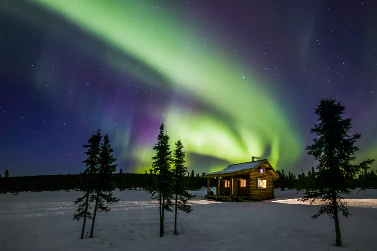
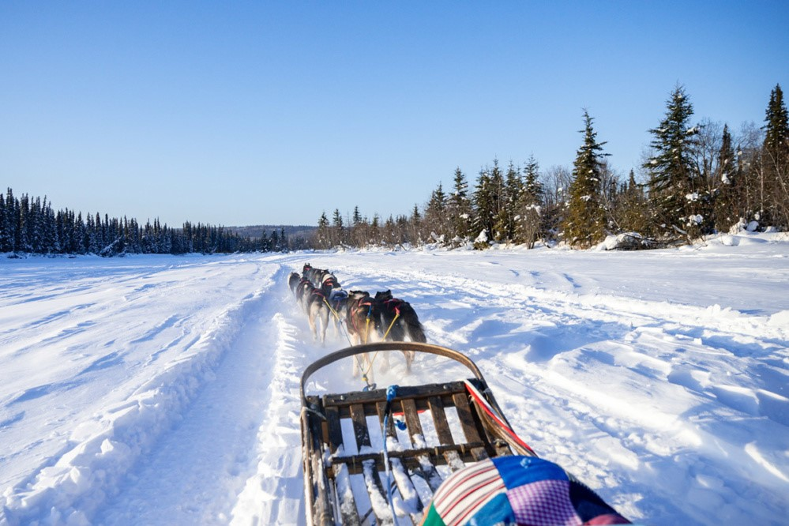

View the Northern Lights

Visit Museums

Outdoor Activities
Alaska is one of the best places on earth to see the northern lights, also known as the aurora borealis colorful bands of light that dance in the dark night sky. Travelers from all over the world come to Alaska to see this stunning display and take advantage of other winter experiences like snowmobiling, dog mushing, skiing, festivals, and sporting events.
At 65 degrees north latitude, Fairbanks is renowned for the northern lights, also known as the aurora borealis, the midnight sun, and sunsets and sunrises that last forever. Basecamp to Denali National Park & Preserve, the Interior, and the Arctic — Fairbanks is the Golden Heart of Alaska. Home to just over 100,000 hearty souls, the Fairbanks region is the second-largest population center in Alaska.
Locals embrace the natural world and have created a vibrant river city in the far north. Where else can you travel to such a remote locale and still enjoy all the amenities of a charming downtown, a thriving arts community, rich Alaska Native culture, authentic Alaska activities and attractions, and endless opportunities for exploration?
So, what are the northern lights, exactly? The northern lights, also known as aurora borealis, occur about 60 or 70 miles above the earth’s surface about 10 times higher than a jet aircraft flies and can extend hundreds of miles into space. Electrically charged particles traveling through the earth’s magnetosphere collide with gasses, creating energy in the form of light. The intensity of solar flares varies the intensity and extent of activity within the Auroral oval, the ring-like area above the geomagnetic north where auroral activity is concentrated. The most common color displayed is a brilliant green, but the aurora borealis can also produce red and purple patterns.
If you’re looking for daylight and warm temps, the best time to visit is June through August, when summer is in full swing. Temperatures can get up into the 80s and it doesn’t get completely dark for 70 days straight, from May 17 – July 27. Keep in mind that July to August is peak visitor season in the city and accommodation prices can be more expensive. For a less busy and more affordable visit, the shoulder seasons are equally great in Fairbanks. Fall brings crisp and bright days with temperatures falling to the 40s, and seeing the changing colors is well worth the extra layers. The cooler weather makes hiking more comfortable, and the darker skies mark the start of the northern lights viewing season. The winter months from December to March are the peak times to see the northern lights. The days can get as cold as -30 degrees and snowfall can be heavy. Accommodation prices increase slightly in winter due to the influx of northern lights seekers and the many winter festivals that the city hosts, but they typically don’t exceed the prices for summer.
From large hotels to cozy cabins, there's a wide variety of places to stay in Fairbanks. Several national and locally owned hotels and lodges can be found in town, some featuring riverfront views of the Chena River. If you're interested in connecting with locals, book one of the many bed & breakfasts for cozy accommodations both in and outside of town. Cabins can be rented in town and in remote areas for a true Alaska experience. Prefer to camp? Fairbanks is home to several campground and RV parks. Visitors to Fairbanks are spoiled with choices when it comes to finding somewhere to stay. Whether you’re looking for a cozy hideout in nature, a chic hotel downtown, or a one-of-a-kind accommodation experience, Fairbanks has it all. Below are just a few of the best areas for lodging in the city.
For travelers looking to be close to all the action, downtown is where you want to stay. The vibrant zone is packed with museums and restaurants and is close to the Chena River, which boasts beautiful views across the water. Downtown has many accommodation types, including luxury hotels, family apartments, and tiny homes. Properties are available to suit all budget types.
You’ll find a variety of lodging near the airport, from budget options to riverfront hotels overlooking the Chena River. These properties are just a few miles from downtown and are close to grocery stores and restaurants.
For those looking for some peace and quiet with a side of adventure, Fairbanks is home to an array of accommodations located outside of town, ranging from high-end luxury lodges to cabins build specifically for northern lights viewing to cozy family-run B&Bs and guesthouses. Away from the ambient city light, staying at these accommodations gives you even better chances of seeing the aurora borealis.